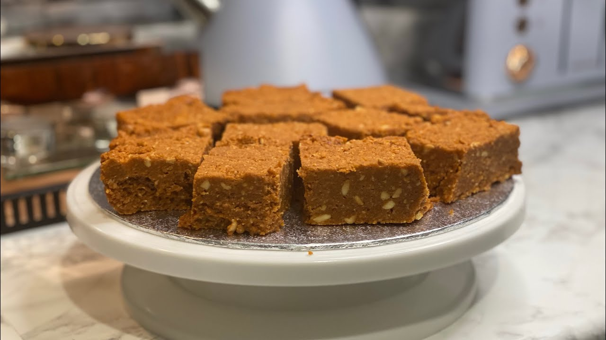

Halawa

Description
The legendary Halawa from the Hararghe region is a warm, intensely gooey, stretchy, and oily confection similar to a rich caramel or Omani halwa. Brought to the region via historical trade routes, it is cooked down in massive copper vats using a base of flour, sugar, and ghee, then heavily scented with spices like cardamom, cloves, and nutmeg.
There are two traditional color variations made in the markets—Red Halawa (colored with food dye or caramelized sugar) and White Halawa. Here is how to make the authentic, chewy, melt-in-your-mouth style at home
Ingrideants
- cup All-purpose flour (or cornstarch for an extra glossy stretch)
- 2 cups Sugar o
- 2.5 cups Water
- ½ cup Niter Kibbeh (Ethiopian spiced clarified butter—or high-quality ghee)
- 1 tsp Green cardamom powder
- ¼ tsp Ground cloves
- ¼ tsp Ground nutmeg
- A few drops of red food coloring (optional, for the "Red Halawa" look)
- ½ cup Coarsely chopped nuts (cashews, almonds, or peanuts for crunch)
Steps
- Make the Spiced Sugar Syrup
In a medium saucepan, combine the sugar and water over medium-high heat. Stir until the sugar is fully dissolved. Bring it to a boil, then immediately lower the heat to a gentle simmer. Stir in the cardamom, cloves, nutmeg, and the optional red food coloring. Keep this syrup warm on low heat while you move to the next step. - Toast the Flour Base
In a deep, heavy-bottomed pot (or a large non-stick wok), heat the niter kibbeh (or ghee) over medium heat until melted. Add the flour all at once. Stir continuously with a wooden spoon or silicone spatula to form a smooth paste (roux). Cook for about 3–5 minutes until the flour loses its raw smell and turns a very light golden color. Do not let it turn dark brown - Incorporate the Syrup (The Stretch Phase)
Carefully and slowly pour the warm, spiced sugar syrup into the flour paste while whisking or stirring aggressively. The mixture will immediately sputter, bubble, and begin to clump up. Lower the heat to medium-low and switch back to your sturdy wooden spoon - Cook and Knead in the Pan
Stir and fold the mixture non-stop. As the water evaporates, the paste will transform into a thick, glossy, cohesive mass that pulls completely away from the sides of the pot. Continue folding it over itself for 10–12 minutes. You will know it is ready when the texture becomes jelly-like, highly elastic, and a thin sheen of oil begins to separate and pool slightly at the edges - Add the Crunch and Set
Fold in your chopped nuts. Pour the hot, sticky halawa into a greased baking dish or glass container. Smooth out the top with the back of a greased spoon.